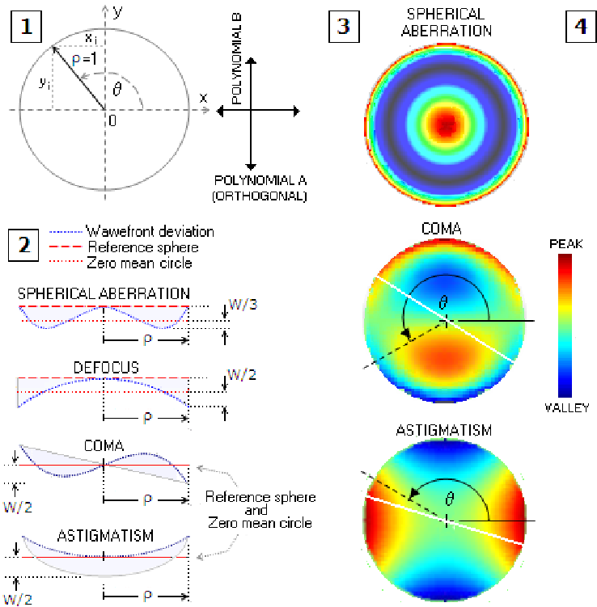
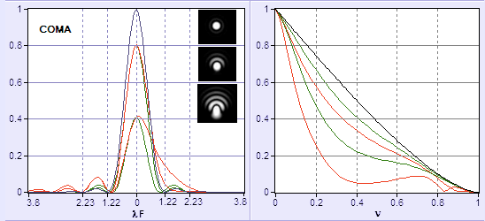
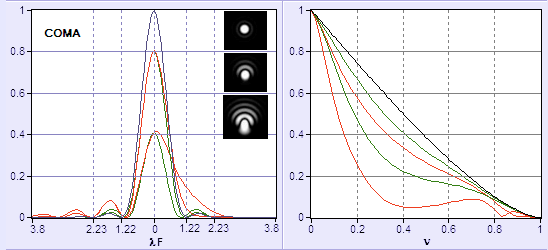
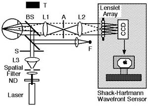
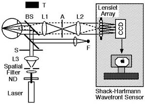
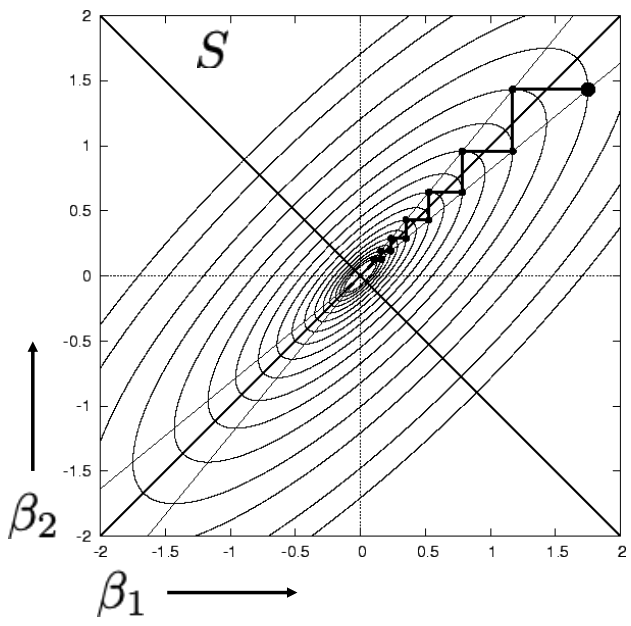

Seidel Aberrations


- Primary aberrations from optical system misalignment or manufacturing error
- Seidel aberrations for monochromatic light:
- Spherical aberration
- Coma
- Astigmatism
- Curvature of field
- Distortion
- Chromatic
(Not phase aberrations as described previously in this lecture, i.e. for a single point like object. Those are field dependent or wavelength dependant aberrations)

Seidel aberrations: Coma
- Also a field aberration in many optical system (i.e. something you get when looking off-axis)

- "field Aberration": an aberration that varies as a function of position in the output field (field = image plane)
- Characterised by core + tail

Seidel aberrations: Spherical
- Often due to polishing error

- The Hubble space telescope is an infamous example

Seidel aberrations
- Left: geometrical (ray) view | right: physical (Fourier) optics view


Zernike polynomials: background
- The
 mathematical functions were originally described by Fritz Zernike in 1934.
mathematical functions were originally described by Fritz Zernike in 1934. - They were developed to describe the diffracted wavefront in phase contrast imaging.
- Zernike won the 1953 Nobel Prize in Physics for developing Phase Contrast Microscopy.
Zernike polynomials/modes

Why Zernikes?
- Zernike
 polynomials have nice mathematical properties:
polynomials have nice mathematical properties:
- They are orthogonal over the continuous unit circle:
- All their derivatives are continuous.
- They efficiently represent common errors (e.g. coma, spherical aberration) seen in optics.
- They form a complete set, meaning that they can represent arbitrarily complex continuous surfaces given enough terms.
Zernike polynomials

Zernike polynomials...

... and corresponding PSFs


Impact on Optical Transfer Function
 



Aberration retrieval


- Using Wavefront sensors

- Hartmann, Shack-Hartmann sensor
- Foucault knife, pyramid sensor
- Interferometer: Michelson, Mach-Zehnder, Fizeau,…
- Self referenced interferometers: Shearing, point diffraction,…
- Using the image itself
- Phase diversity

- Phase diversity
Linear Optical Systems

Shack-Hartmann WFS

Shack-Hartmann WFS

Shack-Hartmann WFS

Shack-Hartmann in 2D

- A Shack-Hartmann sensor measure the average X and Y gradient over the subaperture
Shack-Hartmann in 2D

Shack-Hartmann in 2D

Shack-Hartmann in 2D

Shack-Hartmann in 2D

Sensing issues: non linearity

Sensing issue: Hysteresis

Practical implementation
In Astronomy In Ophthalmology
 

- Field stop
- Collimating optics (usually lenslet 1F behind collimator)
- Lenslet array (most commercial arrays have pitch of 100-1000 μm)
- 2D Sensor: Most CCDs/CMOS have pixels of 2 (CMOS for phones) to 20 microns (CCDs for science applications). Typical format 1282 to 20482.
Alternative: Phase diversity
- Focal
 plane method
plane method - Acquire an “in focus” image
- but (wavefront) phase is lost during the image formation
- ...and an image with some added phase “diversity”, e.g. focus
- The second image lift the sign uncertainty
- Then use a minimisation package (Steepest descent, Conjugate Gradient, Levenberg–Marquardt, etc) to find the phase that reproduce best the images, or AI.
Minimisation & Fitting
- The problem: Given data points at , find model parameters so that the least square distance model-data is minimum:
 - Iterative methods
- Steepest descent, Conjugate Gradient,
Levenberg–Marquardt - Issue with local minima: